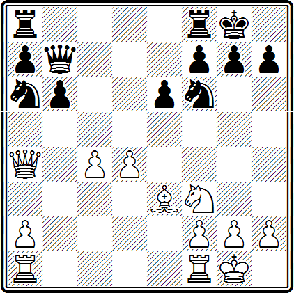
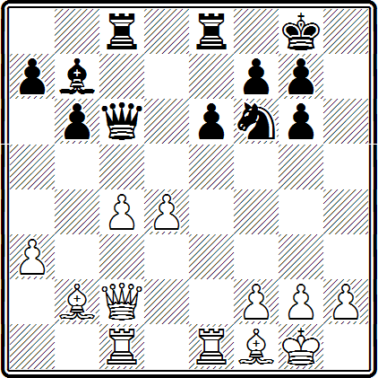
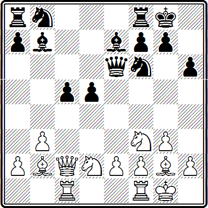
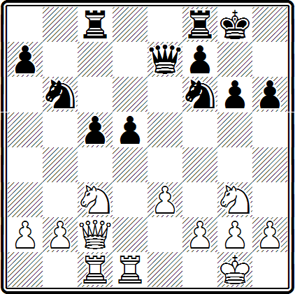
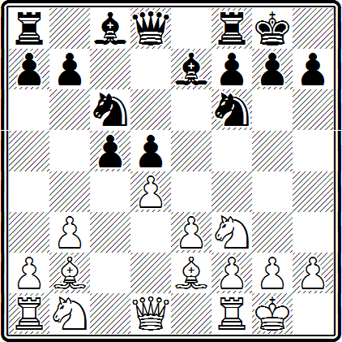
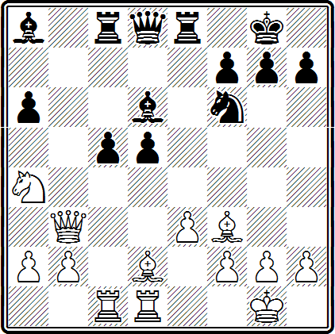

Рассмотрим следующее расположение пешек.
Пешки с5 и d5 называют «висячими». Они стоят рядом, на соседних вертикалях («Ь» и «е») нет черных пешек, перед ними — белых. Такая структура часто возникает в различных закрытых дебютах, и поэтому изучение особенностей висячих пешек представляет значительный практический интерес.
Когда эти пешки стоят рядом, они отнимают у фигур противника несколько центральных полей на четвертой горизонтали и таким образом стесняют его. Однако защита «висячих» пешек часто доставляет немало хлопот их обладателю. Движение любой из них вперед дает фигурам противника удобные поля в центре, и пешки могут оказаться блокированными, а оставшаяся позади пешка станет уязвимой — ее уже нельзя защитить никакой другой пешкой.
Поэтому продвижение одной из «висячих» пешек может быть оправдано только конкретной целью, например давлением на пешку Ь2 (при продвижении с5—с4), или подрывом позиции противника (при d5—d4), или открытием линий для своих фигур. Одним словом, продвижение одной из «висячих» пешек — ответственное дело, и нужно тщательно взвесить все, прежде чем решиться на него.
Приводим несколько примеров, иллюстрирующих слабость и силу «висячих» пешек.
Юдович — Котов
Москва, 1942 г.
14. . . . Ла8—с8
Черные начинают развивать давление на висячие пешки противника, а фигуры белых должны все время защищать их.
15. Фа4—b3 Ка6—b8
Конь переводится на а5 для нападения на «висячие» пешки.
16. а2—а4 Фb7—с7
17. Лf1—c1 Кb8—с6
18. Се3—g5 Кc6—а5
19. ФbЗ—d3 Лf8—d8
Маневрируя, черные держат под обстрелом пешки, и это лишает белых возможности создать активную встречную игру.
20. Cg5:f6 g7:f6
21. Лс1—с3 Лd8—d7
22. Фd3—е4 Фс7—d8
23. Ла1—c1 Ка5—b7
24. Фе4—g4+ Kpg8—Ь8
25. h2—h4 Лd7—с7
26. h4—h5 . . .
Всего лишь безобидная демонстрация. Белые не успевают создать реальных угроз.
26. . . . КЬ7—d6
27. d4—d5 . . .
Теперь пешка c4 становится безнадежно слабой. Кроме того, черные получают удобные опорные пункты (с5, d4). Однако нелегко здесь дать хороший совет белым. На с4—с5 может последовать Kd6—f5 и затем Ф68—d5. Лучше было, вероятно, Kf3—d2, воздерживаясь пока от продвижения пешек.
27. . . . еб—е5
28. Kf3—h4 Фd8—g8
29. Фg4—е2 Фg8—g5
30. g2—g3 Лс7—c5
31. Kh4—g2 Kd6—f5
32. Лс1—d1 Kf5—d4
33. Фе2—f1 Фg5:h5
Черные, имея лишнюю пешку и значительное превосходство, через несколько ходов выиграли.
Эйве — Решевский
Цюрих, 1953 г.
Как оценить эту позицию? Черные могут постепенно усиливать нажим на «висячие» пешки противника, в их распоряжении маневры Ле8—d8, Kf6—е8—d6, Сb7—а6 и т. д. Что могут противопоставить этому белые? По-видимому им следует усилить поддержку своих висячих пешек фигурами, имея в виду продвинуть одну из них в удобный момент. Продолжение 20. Фb3 Лed8 21. Лed1 выглядело вполне надежным для белых. Но Эйве решил действовать «активно» и только напрасно отвлек свои силы на фланг.
20. Ле1—е3 . . .
Белые собираются атаковать по линии «И».
20. . . . Ле8—d8
21. Фс2—е2 Фc6—d6
22. ЛеЗ—h3 . . .
Этот маневр ладей совершенно нецелесообразен.
22. . . . Фd6—f4
23. Лс1—d1 Сb7—а6
24. Лh3—f3 Фf4—е4
25. Лf3—е3 Фе4—g4
26. f2—f3 Фg4—f4
27. g2—g3 Фf4—h6
28. Ле3—с3 Фh6—g5
29. Фе2—f2 Лd8—d7
30. Лd1—c1 . . .
Если белые попытаются перевести слона через c1 на f4, а затем на е5, то после 30. Сс1 Фа5 31. Фb2 Фа4 черные выигрывают пешку.
30. . . . Лd7—с7
31. Лс1—с2 Фg5—а5
32. Сb2—с1 . . .
Видимо, белые все-таки собирались перевести слона на f4 и допускают просмотр. Но и при других ходах им пришлось бы вести трудную защиту: черные могут усиливать нажим (например, Kf6—е8—d6).
32. . . . Kf6—d5
Материальные потери для белых неизбежны, как бы они ни продолжали.
33. с4:d5 Лс7:с3
34. Лс2:с3 Фа5:с3
35. Сс1—b2 Фc3—b3
36. Сf1:а6 Лс8—с2
37. d5—d6 Лс2:f2
38. d6—d7 Фb3—d5
39. Kpg1:f2
Белые сдались.
Рагозин — Цветков
Москва, 1947 г.
14. b3—b4! . . .
Типичный прием в борьбе с «висячими» пешками. Черные не могут защитить пешку с5 другой пешкой и поэтому теряют контроль над центральным пунктом d4. Это обстоятельство сыграло решающую роль.
14. . . . Кb8—d7
После 14... cb 15. Kd4 с последующим 16. Kf5 и затем Кb3 фигуры белых заняли бы превосходные атакующие позиции.
15. b4:с5 Се7:с5
16. Kd2—b3 Лf8—с8
17. Кb3:с5 Лс8:с5
18. Фс2—b3 Фе6—b6
19. Сb2—d4 Фb6:b3
20. а2:b3
Белые получили явное позиционное преимущество. Они овладели линией «с», пунктом d4, у черных в центре изолированная пешка, которая в эндшпиле становится слабостью.
Подрыв висячих пешек принес свои плоды. Однако такой подрыв невыгодно осуществлять в случаях, когда противник, имеющий висячие пешки, получает сильную проходную. Это видно из следующего примера.
Сабо — Пахман
Стокгольм, 1952 г.
20. е3—е4? . . .
В духе позиции было 20. b3, ограничивая подвижность висячих пешек. Теперь черные получают сильную проходную, а заблокировать пешки невозможно.
20. . . . d5—d4
21. Кс3—е2 . . .
Предпочтительнее 21. Кb1, имея в виду перевод коня на с4.
21. . . . h6—h5
22. f2—f3 . . .
Пешка е4 нуждалась в защите, черные угрожали ее выиграть после h5—h4.
22. . . . Лf8—d8
23. b2—b3 Kf6—d7
24. Фс2—d2 Kd7—е5
Отсюда конь успешно поддерживает движение черных пешек, обстреливая поля перед ними.
25. Фd2—h6 . . .
Теперь черные могут увеличить свое позиционное преимущество разными путями. Например, продвигать пешки «d» и «с». Пахман предпочел усилить фигурное давление.
П. Романовский предложил вместо маневра Фс2—d2—h6 играть 24. Кh1 и затем Кf2, опять-таки стремясь к блокаде черных пешек. Но и в этом случае инициативой владели бы черные. Например, 24. Кh1 Ке5 25. Kf2 с4 26. Ьс Л:с4 27. Фb2 Л:c1, и нельзя теперь 28. К:c1 (а в другом случае черные играют 28... d3) ввиду 28... Кbс4, затем 29... Ке3 и 30... Фg5 с выигрышем.
25. . . . Лс8—с6
26. Kg3—f1 Лd8—d6
Белые оказались вынужденными отступить ферзем на d2, а еще через несколько ходов — отдать коня за черные пешки «d» и «с».
Ботвинник — Эйве
Амстердам, 1938 г.
Позицию следует считать типичной и в какой-то степени спорной. Поэтому интересно проследить трактовку ее такими сильными шахматистами.
Отметим два существенных обстоятельства: 1) преимущества в развитии нет ни у одной из сторон; 2) разменом de белые «угрожают» изолировать пешку d5. Если же черные предотвращают эту «угрозу» ходом 9... b6, то у них могут образоваться (после 10. dc bc) «висячие» пешки.
Итак, черные должны сделать выбор между изолированной и «висячими» пешками. Нельзя сказать, что этот выбор предрешает исход партии: в обоих случаях игра примерно равна. Можно было спокойно продолжать развитие ходом 9... Се6. Эйве, однако, избирает второй путь, идя на образование «висячих» пешек.
9. . . . b7—b6
10. Кb1—с4 Сс8—b7
11. Ла1—c1 Kf6—е4
Хороший ход, типичный для такого рода позиций.
12. d4:с5 Ке4:с3
13. Сb2:c3 b6:с5
Защита «висячих» пешек не доставляет черным особых хлопот, так как они хорошо развиты. Важно, что у белых нет на ферзевом фланге коня, который обычно беспокоит «висячие» пешки.
14. Фd1—d2 Фd8—d6
15. Лf1—d1 Ла8—d8
16. Се2—f1 . . .
По-видимому, с целью перевода слона на диагональ а8—h1 для давления на пешку d5, но этот план белым не удается осуществить. Хотелось бы расположить коня на d3, а слона на а3, но как это сделать? Например, после 16. Сb2 Кb4 17. Са3 а5 черные чувствуют себя хорошо.
16. . . . Фd6—h6
17. g2—g3 Cb7—с8
18. Kf3—е5 . . .
Если 18. Cg2, то 18... Cg4 и затем Фh5.
18. . . . Кc6:е5
19. Сс3:е5 Сс8—g4
20. Cf1—е2 Фh6—h5
21. Се2:g4 Фh5:е5
22. Фd2—е2 Фе5—d6
23. Cg4—f5 Фd6—b6
На 40-м ходу партия окончилась вничью.
Бронштейн Авербах
Цюрих, 1953 г.
Слоны черных нацелены на королевский фланг противника. Некоторые белые фигуры (слон на d2, конь на а4) расположены неудачно. Используя особенности, характерные для позиции с «висячими» пешками (подвижность этих пешек, открытые линии «b» и «е»), черные могли получить сильную атаку посредством 18... Лb8. Ферзь прогоняется с b3, чтобы после продвижения d5—d4 он не мог защищать слона f3. Вот примерное продолжение:
19. Фb3—d3
Если 19. Фс2, то 19... d4 с приблизительно такими же разветвлениями, как и в основном варианте: 20. ed С:f3 или 20. С:а8 С:h2+ и т. д.
19 . . . c5—с4
20. Фd3—с2 . . .
Если 20. Фе2, то черные различными способами получают преимущество, например: 20... Сс6 21. b3 С:а4 или 20... Фd7 21. b3 cb 22. ab Л:b3, и нельзя 23. Ф:а6 из-за 23... Сb7 24. Фа5 Ла8.
Ход 20. Фf5 также нехорош.
20. . . .d5—d4
«Висячие» пешки пришли в движение.
21. Сf3:а8 . . .
Если 21. Ф:с4, то после 21... С:f3 22. gf у черных сильная атака. Возможно, например, 22... Кh5 23. f4 Фh4 24. Ф:d4 Ле6 и т. д. Плохо 21. ed Cf3 22. gf Кh5 и т. д.
21... С:h2+ 22. Кр:h2 Kg4+ 23. Kpg1 Фh4 24. Са5 Фh2+ 25. Kpf1 d3, и черные выигрывают.
Однако в партии этого не случилось. Черные упустили свои шансы, попытавшись создать атаку, не двигая висячие пешки.
18. . . . Kf6—е4
19. Cd2—e1 . . .
Здесь слон превосходно защищает королевский фланг.
19. . . . Лc8—b8
20. Фb3—d3 Фd8—h4
21. g2—g3 Ke4:g3
22. h2:g3 Фh4:a4
23. Ce1—c3 Cd6—e5
24. Cc3:e5 Лe8:e5
25. Лc1:c5 Фa4:a2
26. b2—b4 Лe5—e8
Ничья.